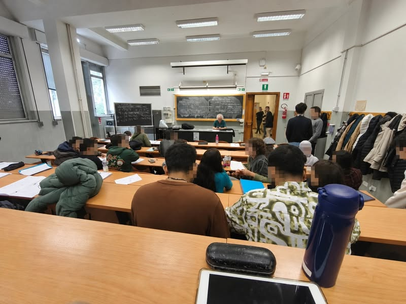

รัฐบาลดิจิทัล การมีส่วนร่วม และวิธีคิดข้ามศาสตร์


วันที่ 6 พฤศจิกายน 2026 ผมมีบรรยายพิเศษให้นักศึกษารัฐศาสตร์ มหาวิทยาลัยธรรมศาสตร์ ในหัวข้อ Digital Government and Public Policy Participation ผมเคยมาบรรยายให้หลักสูตรนี้หลายครั้งแล้ว งานวิจัยของผมมีทั้งด้านคอมพิวเตอร์และรัฐศาสตร์ สองสาขานี้จึงมาเจอกันอยู่เรื่อย ๆ ครับ
เรื่องที่อยากชวนคุยคือ ข้อมูลและวิธีคิดเชิงคำนวณ กำลังแทรกอยู่ในแทบทุกสาขา โดยเราไม่จำเป็นต้องเขียนโปรแกรมเองเสมอไป เมื่อ AI เขียนโปรแกรมได้มากขึ้น คนที่มีความรู้เฉพาะด้านก็มีเครื่องมือมาช่วยทำงาน ขณะเดียวกัน คนคอมพิวเตอร์ก็ต้องเข้าใจปัญหาของสาขาอื่นให้ลึกขึ้นด้วย ทั้งสองฝั่งน่าจะขยับเข้าหากันครับ
พื้นฐานที่ช่วยให้คิดและตรวจคำตอบได้
ช่วงนี้คงเป็นระยะเปลี่ยนผ่าน แต่ผมคิดว่าคนที่มีพื้นฐานแน่น คิดเป็น และพร้อมเรียนรู้ จะใช้ AI ต่อยอดไปจัดการปัญหาที่ซับซ้อนได้ดีขึ้น หลายสาขามีวิธีคิดพื้นฐานร่วมกัน ทั้ง การตั้งคำถาม การพิจารณาหลักฐาน การให้เหตุผลภายใต้ความไม่แน่นอน และการเข้าใจข้อจำกัดของคำตอบ
จากรัฐบาลดิจิทัลถึงการร่วมตัดสินใจ
เนื้อหาสำหรับนักศึกษารัฐศาสตร์ครั้งนี้จึงเชื่อมหลายเรื่องเข้าด้วยกัน ตั้งแต่โครงสร้างพื้นฐานและคุณภาพข้อมูล ไปจนถึงการตีความและการมีส่วนร่วม ได้แก่
- รัฐบาลดิจิทัลต่างจากรัฐบาลอิเล็กทรอนิกส์อย่างไร
- โครงสร้างพื้นฐานด้านข้อมูล กฎหมาย และสิทธิของประชาชน
- กรณีศึกษาคนละครึ่งในฐานะนโยบายที่ดำเนินการผ่านระบบดิจิทัล
- คุณภาพข้อมูล metadata และปัญหาของข้อมูลสำรวจหลายปี
- แนวคิดของ Bayes และการปรับความเชื่อเมื่อมีหลักฐานใหม่
- เหตุใดการหารูปแบบจากข้อมูลจึงต้องอาศัยคนตีความ
- การมีส่วนร่วมตั้งแต่การรับฟังจนถึงการร่วมตัดสินใจ
- Decidim งบประมาณแบบมีส่วนร่วม และความเสี่ยงของ civic technology
ก่อนจะตัดสินว่าความรู้เรื่องใดไม่จำเป็น
คำถามที่มักตามมาคือ ทำไมต้องรู้เรื่องเหล่านี้ ไม่รู้ได้ไหม ผมว่าเรายังตัดสินได้ยากว่าความรู้เรื่องหนึ่งไม่จำเป็น หากยังไม่เคยเห็นว่ามันเชื่อมกับปัญหาที่เราสนใจอย่างไร การเรียนพื้นฐาน ช่วยให้เรามองเห็นทั้งคำถามและทางเลือกที่เดิมอาจนึกไม่ถึง
เท่าที่ผมได้เห็นจากลูกชายที่ไปเรียนต่างประเทศ ห้องเรียนก็ยังเต็ม และนักศึกษายังเรียนวิชาพื้นฐานกันอยู่ นี่เป็นประสบการณ์ส่วนหนึ่งที่ทำให้ผมนึกถึงความสำคัญของพื้นฐาน แม้วันนี้จะมีผู้ช่วยที่เก่งขึ้นมาก การคิด ตั้งคำถาม และตรวจคำตอบก็ยิ่งสำคัญขึ้นครับ
ส่วนการบรรยายครั้งนี้ ผมจะปรุงเรื่องคอมพิวเตอร์กับรัฐศาสตร์ออกมาเป็นรสชาติแบบไหน ก็ให้นักศึกษาช่วยชิมครับ 555